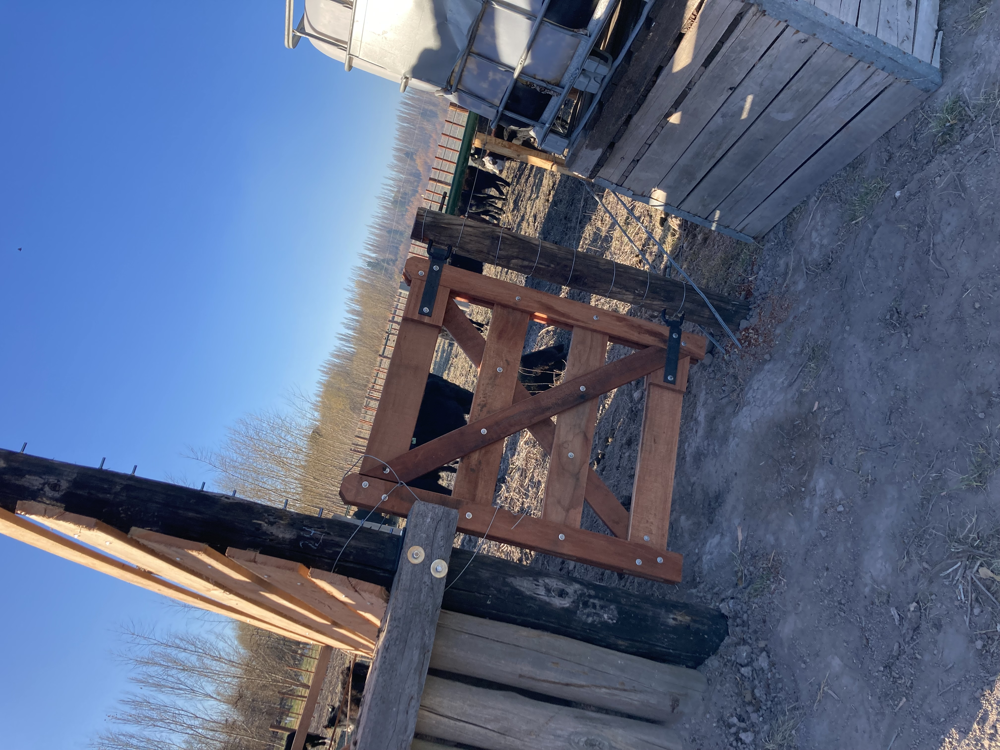
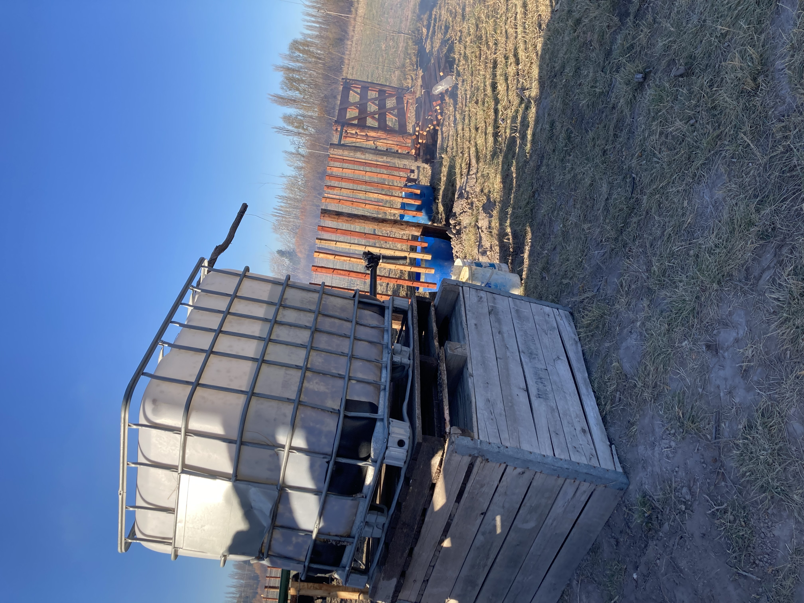
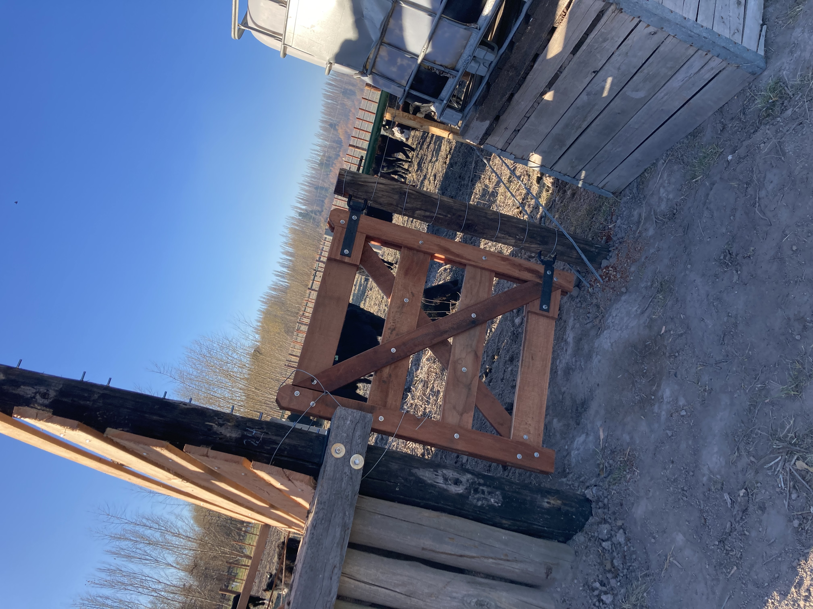
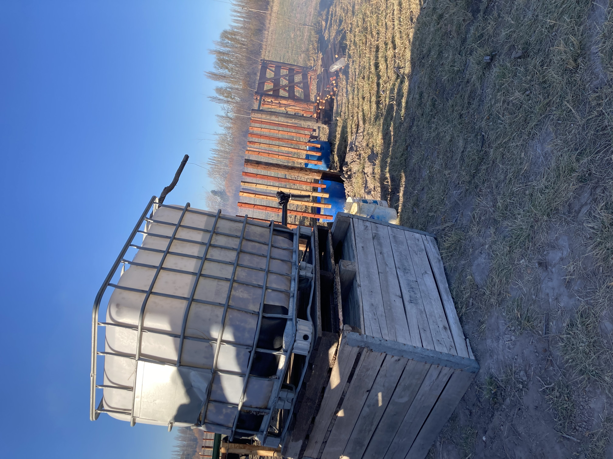

Si de proyectos hablamos, tenemos en mente muchas cosas, pero fuera de lo que es la fruticultura (como viene siendo desde siempre esta chacra) uno de los más cercanos y que ya estamos llevando a cabo, es hacer un engorde para tener animales vacunos. Para ello, realizamos un corral con todo lo que eso implica, es decir, un cepo, manga, tranqueras, comederos, bebederos y demás, con todo lo necesario para poder trabajar dichos animales, pero tenemos en mente ir agregando y sumando pequeñas cosas para poder trabajar comodamente y así terminar de cerrar este proyecto. También, un objetivo a corto plazo que nos propusimos es realizar pastura para así poder alimentar a nuestros propios animales sin necesidad de depender necesariamente de forrajerías.
 


